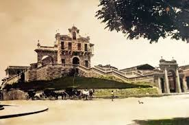

El Calvario
La construcción de este templo de
características neoclásicas se inició en
1784 y la inauguración y bendición
se realizó el 20 de febrero de 1787
con el nombre original de Iglesia de
Nuestra Señora De Los Remedios, sin
embargo, se le conoció como “El Calvario” por las 44 gradas que tenía para
llegar al atrio. El templo resistió los
terremotos de 1917-18, sin embargo,
el 30 de agosto de 1926 se colocó la
primera piedra del nuevo templo, el
cual quedó inaugurado hasta 1932.
Ubico estaba en contra de demoler
el edificio y ordena su reconstrucción
colocándole un arco al lado izquierdo y fue utilizado como museo hasta
1944. La destrucción del templo se
llevó a cabo finalmente en 1946 para la prolongación de la avenida.
Su pérdida se debió a que con el afán de prolongar la calle
real “6 avenida”10 se proyectó un nuevo templo en un área cercana
con otras características arquitectónicas y se demolió.
